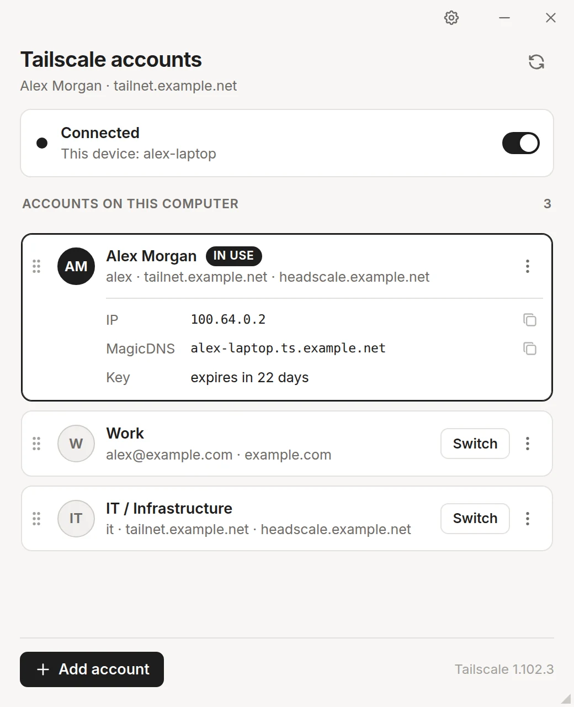
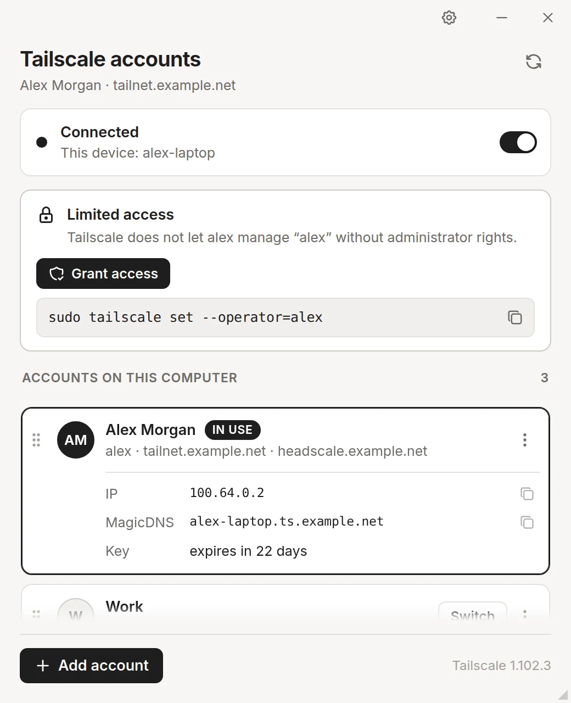
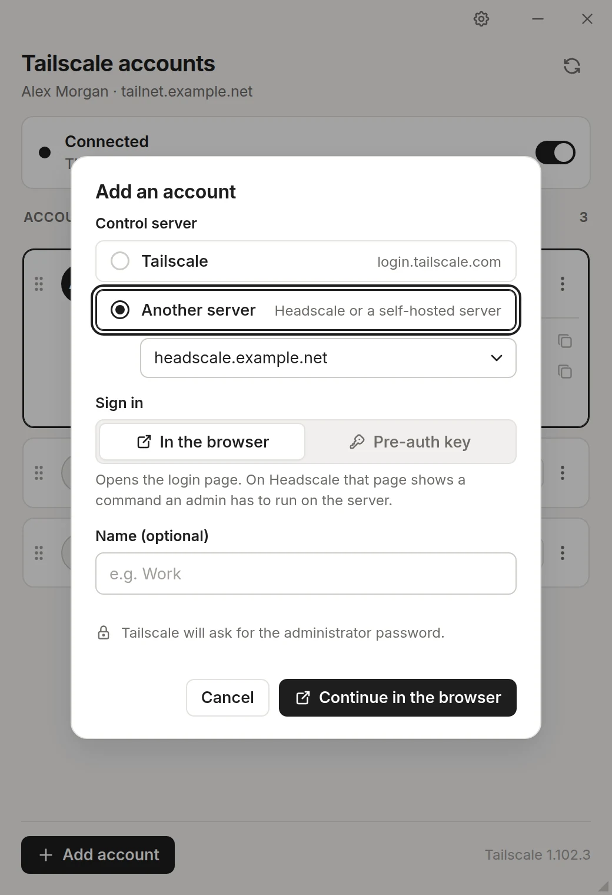
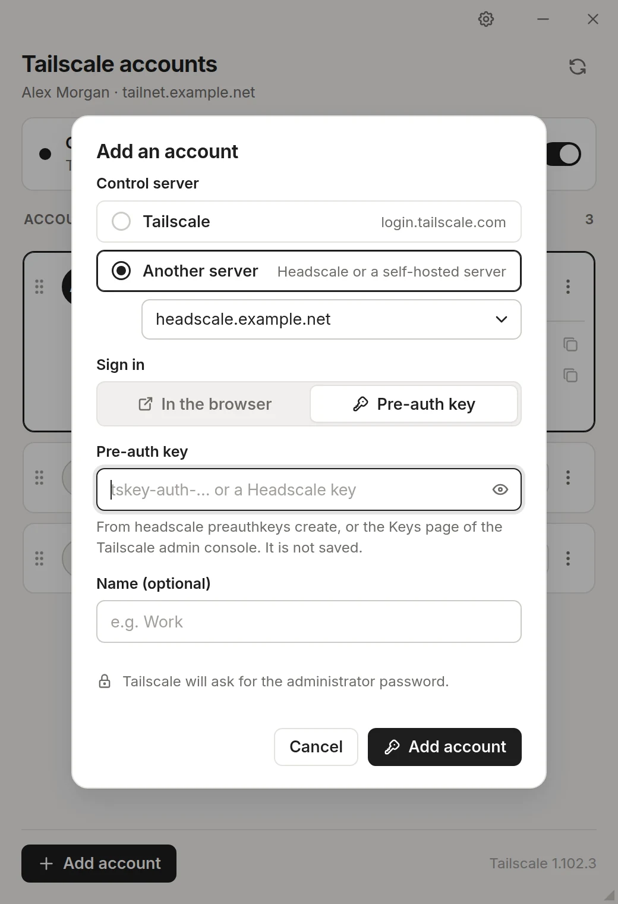
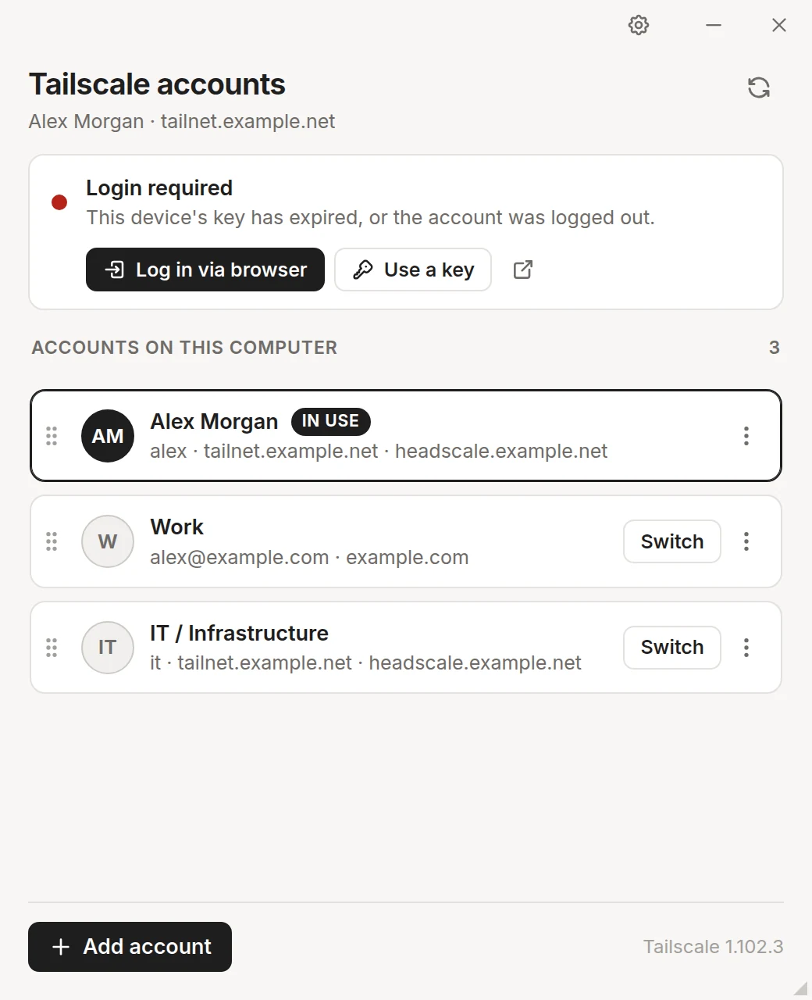
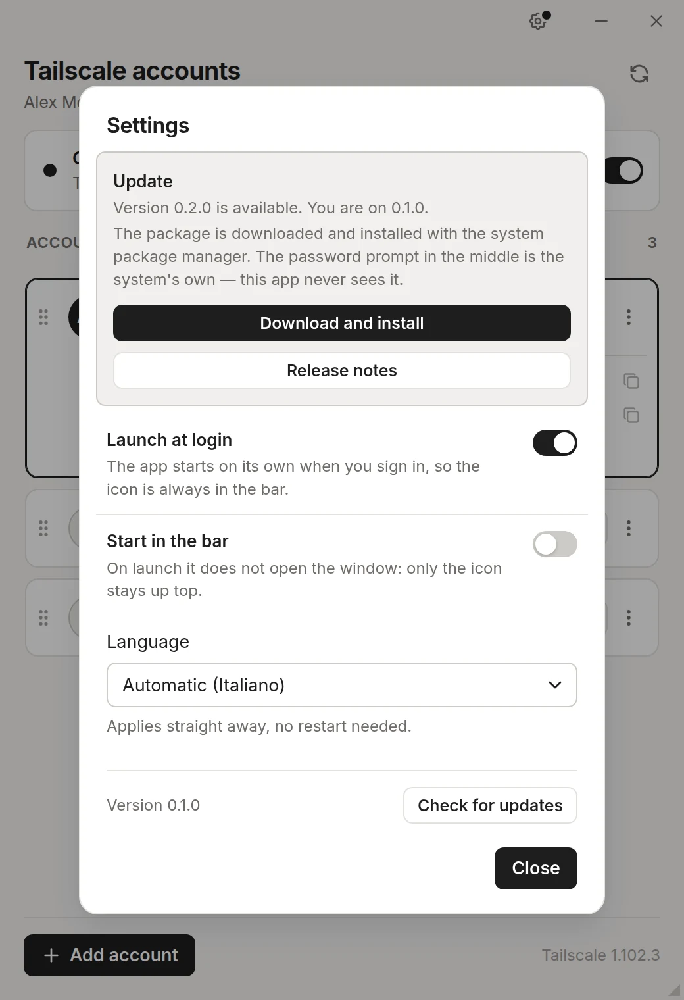

I am on more than one tailnet — work, a Headscale at home — and I keep typing tailscale switch. Can this fix that?
That is the whole point. Tailscale Account Switcher lists every Tailscale account logged in on this computer and moves between them from its window, or from the icon up top without leaving what you are doing: the tray on Linux, the menu bar on macOS.
Tailscale already keeps several accounts side by side — each login is a profile held by
the daemon, its “fast user switching”. So this app stores no credentials of its
own: it reads the daemon and drives the tailscale CLI, nothing more.

A tailscale switch typed in a terminal shows up in the app within a few seconds, so the two never disagree about where you are.
What does it actually do on my machine?
Reads one thing, runs another, and keeps one small file of its own.
What it reads
/var/run/tailscale/tailscaled.sockthe daemon's LocalAPI — the same JSONtailscale status --jsonprints, for a round-trip instead of a processtailscale status --json,switch --list --jsonthe fallback where there is no socket to talk to, as with the macOS app
What it runs
tailscale switch,up,downswitching, connecting, disconnectinglogin,logout,switch removeadding and removing accounts
The file of its own is ~/.config/tailscale-switch/state.json: the order you dragged
the list into, the window preferences, the control servers you typed before, and the server last
seen for each account — the CLI only reports it for the account in front.
The daemon is read every 3 seconds over the socket, every 6 over the CLI, and every second while an account is coming up or a login is waiting. The read is pushed to the window rather than fetched by it: the window spends most of its life hidden behind the tray icon, where its timers are throttled.
Last time I switched by hand I ended up needing sudo just to switch back. Why?
Because on Linux tailscaled runs as root, and lets a normal user change anything only if that user is the operator of the account in front. And the operator is a preference of each account, not of the machine. Two consequences, both easy to trip over:
- switching onto an account with no operator works — and leaves you unable to switch back, or
even to list the accounts, without
sudo; tailscale loginrun as a normal user moves the daemon onto a brand-new account, which has no operator, then fails to start it. You are left on an empty account, disconnected from the one you were on.
So when the daemon refuses you the account in front, the window says so and offers Grant access:

It runs tailscale set --operator=$USER through pkexec: polkit draws the
password prompt and keeps the password, and the app only learns whether it was given. A change
the daemon refused is retried as soon as access is in.
None of this applies where the daemon runs as your own user, or on macOS.
How do I add an account — including one on my own Headscale?
Add account asks what the CLI cannot guess: which control server, how to sign in, and an optional nickname.

Then it runs tailscale login — as root, through the same password prompt, and with
--operator=$USER, so the new account is born drivable without root. Two ways to
sign in:
- In the browser. The login link the CLI prints is opened for you and kept in
the dialog, to open again or copy. On Headscale that page ends with a
headscale nodes registercommand an admin has to run on the server; if the tailnet wants an admin to approve the device, the dialog says that instead. - With a pre-auth key — a
tskey-auth-…from Tailscale's admin console, or one fromheadscale preauthkeys create. No browser, and nobody needed on the server.

The key reaches the CLI through --auth-key=file:, in a file only you can
read, deleted as soon as the login ends — on the command line it would be readable by anyone on
the machine in the process list. The app does not keep it.
The dialog cannot be dismissed while the login runs. Cancel stops it and puts the daemon back on the account you were on, because an abandoned login leaves it on the half-made one. A login not completed within 10 minutes is abandoned the same way.
What happens when a key expires?
The account shows Login required, with the same two ways back in.

--login-server to remember.Log in via browser goes through the daemon's own interactive login rather than
tailscale up, which on such an account insists on being handed back every
non-default setting it has — --login-server first of all, for anyone on
Headscale — and refuses otherwise.
Use a key opens the add dialog preset with the account's server and nickname. The daemon folds the login into the existing account rather than adding a second one; it keeps the new login's preferences, though, so an exit node or accepted routes need setting again — and the dialog says so.
If it happens while the window is out of sight — typically hours into a session — you get a desktop notification instead.
Is removing an account the same as logging out?
No, and the app keeps them apart.
- Remove from this computer
tailscale switch remove— any account but the one in front. It disappears from this machine; nothing changes on the control server.- Log out
tailscale logout— the account in front. The device disconnects and its node key is invalidated on the server.
The CLI silently does nothing when asked to remove the account in front, so the app does not offer it.
Can it just be there when I log in?
Settings has launch at login and start in the bar — no window on startup, just the icon up top. Closing the window leaves the app running behind that icon, and its menu connects, disconnects and switches without opening anything. Launching it again does not start a second copy: the one already running brings its window back.
The interface speaks English and Italian, follows your system by default, and changes language on the spot.

And that update — does it install itself?
Only when you press the button. Every six hours, and once at launch, the app asks GitHub for the newest release — one unauthenticated request, nothing sent but a user agent. A newer tag puts a dot on the gear in the title bar and the offer at the top of Settings.
Pressing it downloads the package into your Downloads folder, checks its size against what the
release says, and hands it to the system package manager under
pkexec — apt-get for a .deb, dnf,
zypper or rpm for an .rpm. This app never sees the
password. A .dmg is mounted, an AppImage is shown in its folder.
Tags are compared as three numbers, and a -beta.1 or a
nightly never counts as newer: guessing where it sorts is how an app talks someone
into a downgrade. Installing does not replace the copy already running — quit from the tray menu
and start it again.
Anything I should know first?
Two things, plainly:
- Switching reconnects the device. Open connections over the tailnet drop, as they would with the CLI.
- It leans on parts Tailscale calls alpha.
tailscale switchandtailscale loginare marked that way, and the LocalAPI is not a stable interface. Both have been steady for years, but a change there is what would break this app.